School of Computer Science and Engineering, UESTC, Chengdu, China
JANUS-LoRA
2026
A Balanced Low-Rank Adaptation for Continual Learning
* Corresponding author
School of Computer Science and Technology, Tongji University, Shanghai, China
Shanghai Innovation Institute, Shanghai, China
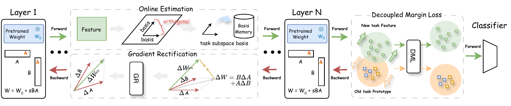
01
From Orthogonality to Diagnosis
Sufficient condition
Old outputs remain unchanged when
ΔW · Xpast = 0
Orthogonality is a sufficient condition for zero interference: updates in the null space do not change historical activations.
LoRA complication
ΔW = BΔA + ΔBA
LoRA does not optimize the full update directly. Independent updates to A and B can make the composite update deviate from the safe direction.
Two observed failures
The paper diagnoses parameter-level misalignment and feature-space encroachment as the two coupled failures behind forgetting.
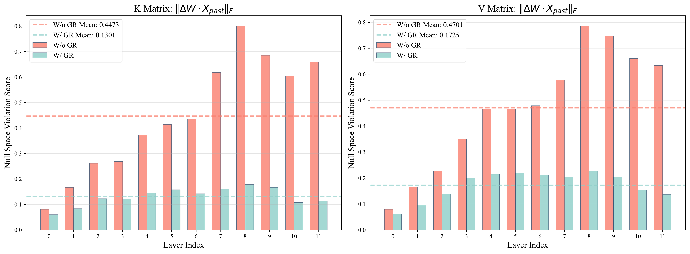
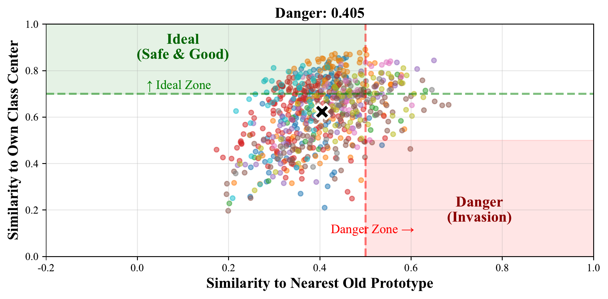
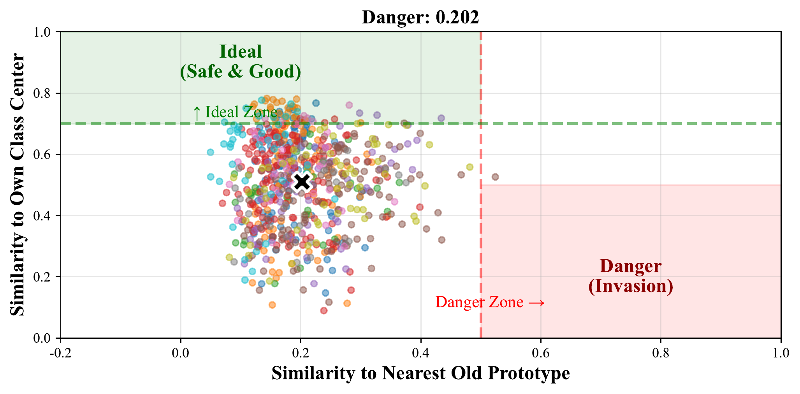
02
Method: Resolve Both Failures
Online Estimation
Maintains an orthonormal basis V for the protected historical subspace without storing old samples.
Gradient Rectification
Converts the ideal safe update ΔWsafe into corrected LoRA factor updates ΔA and ΔB.
Decoupled Margin Loss
Separates new features from old prototypes so plasticity is preserved under the orthogonality constraint.
03
Experiments as an Evidence Chain
Overall effectiveness
Compare JANUS-LoRA with CL and LoRA-based baselines under increasing ImageNet-R task counts.
Conclusion: the method keeps the highest T=20 MAA at 77.11%.Mechanism isolation
Use ablation and plug-in tests to separate the roles of OE, GR, and DML.
Conclusion: GR fixes parameter interference, while DML recovers plasticity.Robustness and cost
Check cross-dataset transfer, online estimation behavior, and cumulative training time.
Conclusion: the balance principle generalizes without excessive runtime cost.Validation of Long-Sequence Effectiveness
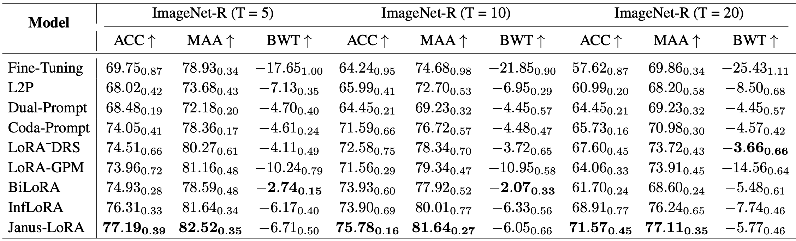
Validation of Component Contributions
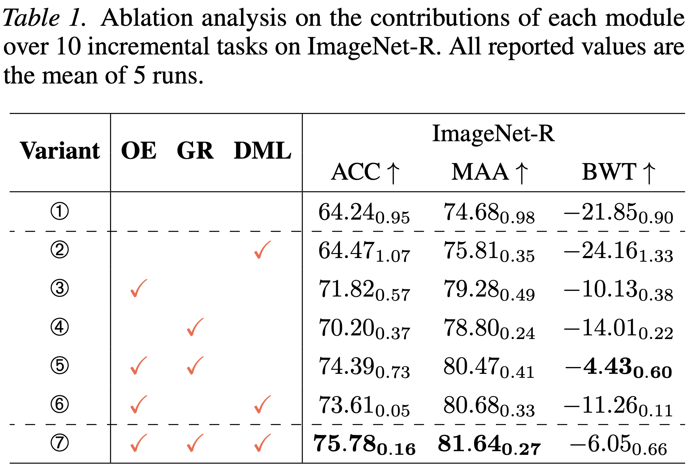
Validation of GR General Applicability
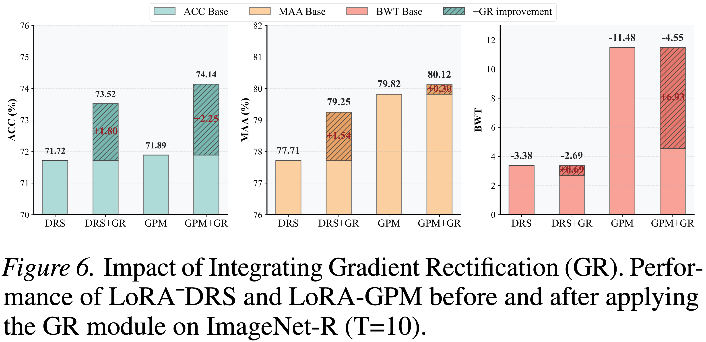
Validation of Sustained Continual Performance
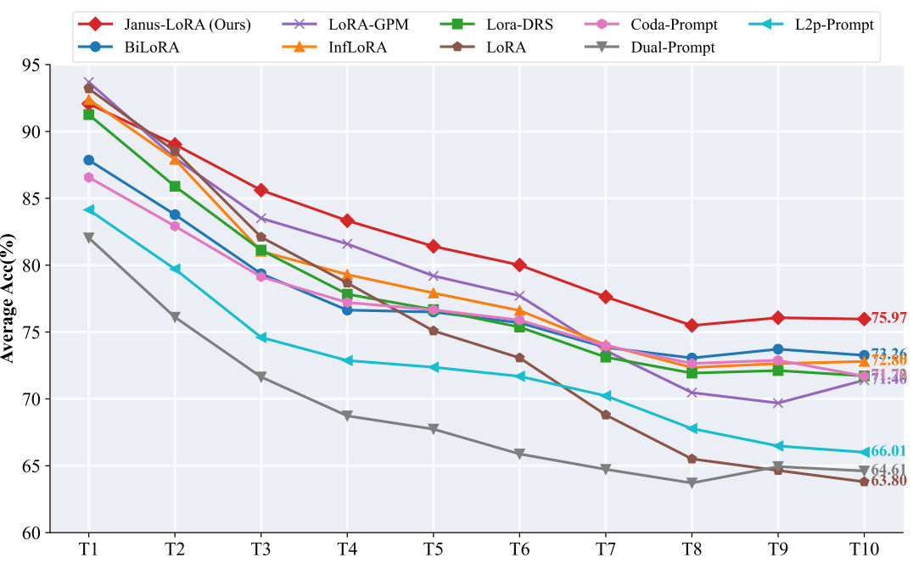
Validation of Cross-Dataset Generalization
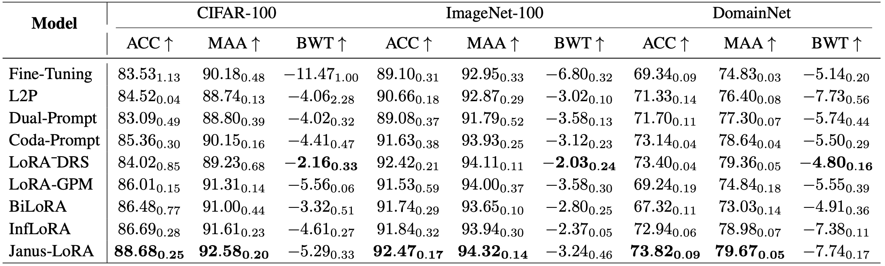
Validation of OE in Single-Pass Training
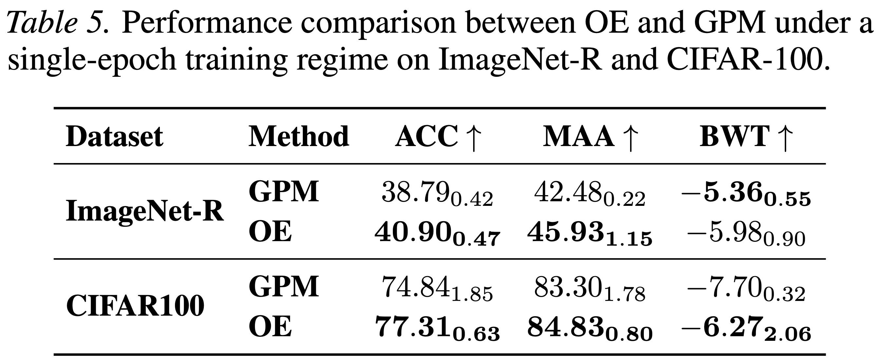
Validation of Training Efficiency
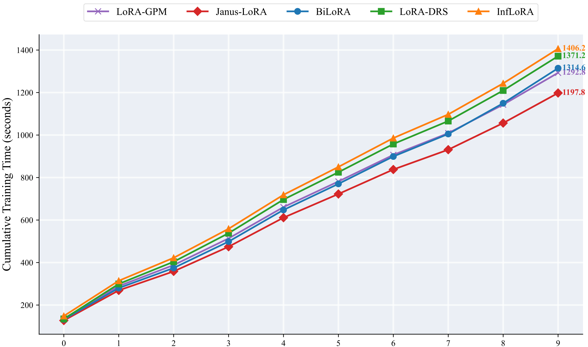
04
Citation
@inproceedings{chen2026januslora,
title = {JANUS-LoRA: A Balanced Low-Rank Adaptation for Continual Learning},
author = {Chen, Cheng and Zeng, Pengpeng and Guo, Yuyu and Gao, Lianli and Shen, Hengtao and Song, Jingkuan},
booktitle = {International Conference on Machine Learning},
year = {2026}
}